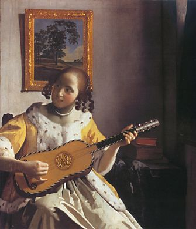
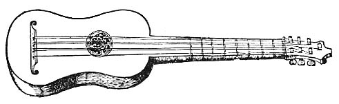
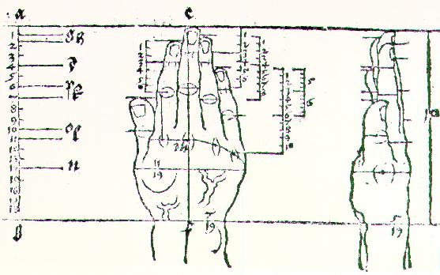
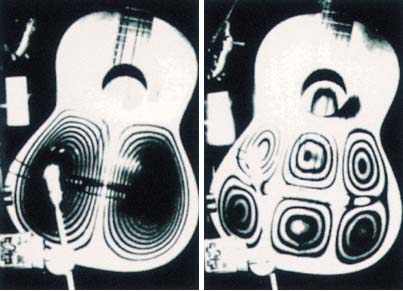
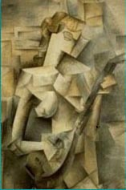

danterosati.com


This page contains:
Information about, and materials for, my class at Juilliard
Exercises to practice and develop technique.
Links to audio of original and classical works.
Links to information about, and audio files of, my Just Intonation Guitar
My Juilliard Evening Division class:
"Developing Classical Guitar Technique"
current semester started Jan. 29, 2009
next semester starts Sept 2009
contact me (see below) with any questions about the class or private instruction
Developing Guitar Technique

Why practice exercises? Would an athlete ask that question?
Playing the guitar is athletics plus musicianship. Technique = Freedom!
When you speak, your vocal chords respond effortlessly and all you have
to think about is what you want to say and how you want to say it. It should
be that way on your instrument too. Your hands must be strong, supple and
in a dynamically relaxed state to be able to play whatever you want without
your fingers tripping all over themselves. You must connect your inner
ear to your fingers so that what you hear in your head may be made audible
for others. Once the following technical exercises are learned in the abstract
form presented below, you should practice a given technique by IMPROVISING
some MUSIC using that TECHNIQUE.
Left hand Exercises:
Don't forget the essential Chromatic Octaves
Also do some Legato Chromatic Scales
Right Hand Exercises:
Warm up with some Single Finger Strumming
And while you're at it, you might as well practice some Rasgueo
Then get to work on the Right Hand Combinations
Scales:
Before you start, you better know about Preparation
And before you do anything else, practice some String Crossing
Practice the Chromatic Scale
Then get to know the fingerboard by learning the Diatonic Scale Patterns
Here's a good way to practice Major Scales, and train your ear too.
To help you with memorization, here's an essay on Visualization
to hear mp3s, you can go to
or simply click on the links below:
(click to stream, right click to "save as")
Ciaconna in D minor by J.S Bach This recording is of the violin version, with very few alterations.
Fuenllana Fantasia 16 - performed on Vihuela
Fuenllana Fantasia 7 - performed on flamenco guitar
Narvaez Fantasia Tercer Tono - performed on guitar
Kapsberger Toccata Arpeggiata - performed on guitar strung and tuned like a chittarone
Dalza Calata Spagnola - performed on Vihuela
Albutio Fantasia from "Intabolatura de Leuto de Diversi Autori" (1536) by G. A. Casteliono. performed on guitar
Original Compositions for Guitar
Song of the Wanderers score (pdf)
Noguchi
(live recording from
my Master's Degree graduation recital at Juilliard in 1991.)
21 Tone Just Intonation Guitar
Some of my favorite guitarists:
Django Reinhardt - Lonnie Johnson - Paco De Lucia - Segovia - Sabicas
Jimmy Hendrix - Frank Zappa - Eliot Fisk - Kazuhito Yamashita

Links:New York Classical Guitar Society
Soundboard Vibrations made visible!

If you find the practice material and the free recordings available on this site of value, please consider making a donation to help me keep on developing and expanding this site: